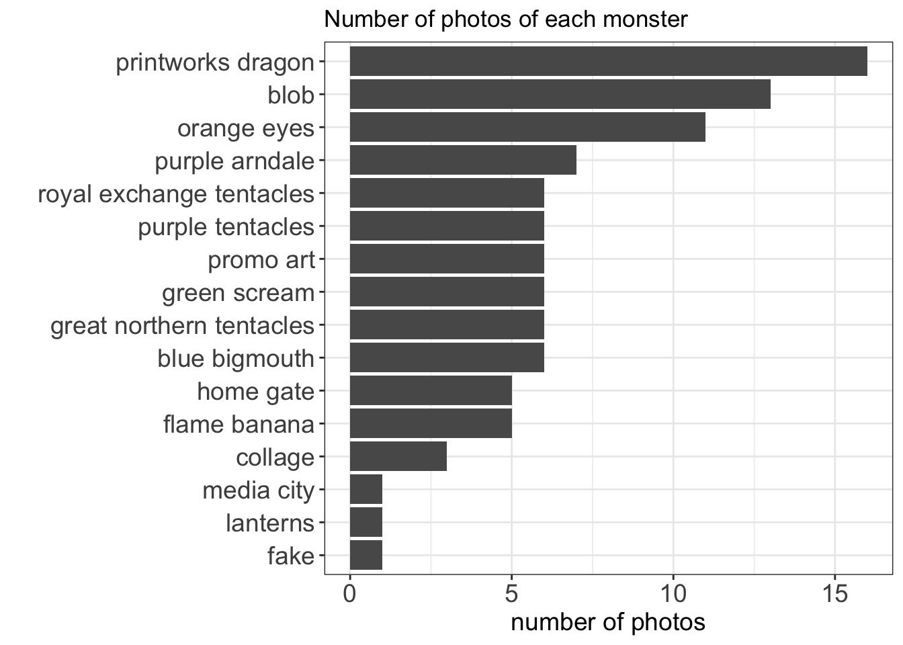

On 29 October 2019 I gave a short presentation at PyData Manchester and Open Data Manchester joint meetup on the topic of Data Horror Stories. My talk was a data-driven exploration of the massive inflatable Halloween monsters of Manchester.
Halloween is the best
Boys and girls of every age Wouldn’t you like to see something strange Come with us and you will see, This our town of Halloween - The Nightmare Before Christmas
I friggin’ love Halloween! I get really into it. Last year, we organised a Halloween themed all day #rstats conference/meetup/thing, ( you can read all about that here), which involved some fantastic pumpkin carvings:

…and me dressed up as the broom package

(far right, with a broom and some functions taped to me…!)
When I first moved to the UK 9 years ago, it was not really a thing at all, but more recently, it has become adopted as a fun and spooky holiday for all the age groups. In Manchester for example there are now all sorts of Halloween related activities. One of these is a set of inflatable monstrers which are dotted around the city centre. You can download a map to hunt for them all here.
Naturally, the monster walk was something very appealing to me, and we set out to walk the monster walk, take nice photos, and then pick our fave monsters over some beers. In our household, the hands down winner was “Blob”:
blob
But what about the rest of the city? Which was Manchester’s favourite monster? This was the question I set out to answer in this talk

MCR Monsters
One way to gauge what monsters people are photographing and sharing is to look at Instagram. I found two key hashtags that were relevant:
I wanted to select posts that used both hashtags, because a lot of what was coming up with just one or the other was actually not monster related content (at least not in the sense that I was after).
To acquire a set of photos with these hashtags and some of their metadata, I used the instaloader tool. Specifically to get only posts that had both hashtags, I modified this bit of code by aandergr. My version can be found on github here: https://github.com/maczokni/halloweenMCR. This was the only bit of Python I used however, and then I swiftly read my retreived JSON into R.
After some cleaning I had a nice bit of data with some Monster photos and associated metadata. However, none of these told me which monster is in each photo. So this required some manual coding, where I looked at each photo, and coded what monster I saw.
Finally, after all this was done, the results could be considered
And the winner is…
I was working in the lab, late one night When my eyes beheld an eerie sight For my monster from his slab, began to rise -Bobby Pickett - Monster Mash
So finally we can get to some results.
First I considered number of posts:
library(ggplot2)
library(dplyr)##
## Attaching package: 'dplyr'## The following objects are masked from 'package:stats':
##
## filter, lag## The following objects are masked from 'package:base':
##
## intersect, setdiff, setequal, uniontagged_monsters <- read.csv("https://raw.githubusercontent.com/maczokni/halloweenMCR/master/HalloweenMCR%2CMCRMONSTERS/mcrmonsters_2019_tagged.csv")
tagged_monsters %>%
filter(!monsters %in% c('event', 'other', 'fake')) %>%
group_by(monsters) %>%
summarise(n = n()) %>%
ggplot(., aes(x = reorder(monsters, n), y = n)) +
geom_bar(stat = 'identity') +
theme_bw() +
xlab("") + ylab("number of photos") +
coord_flip() +
theme(axis.text = element_text(size = 18),
axis.title = element_text(size = 18))